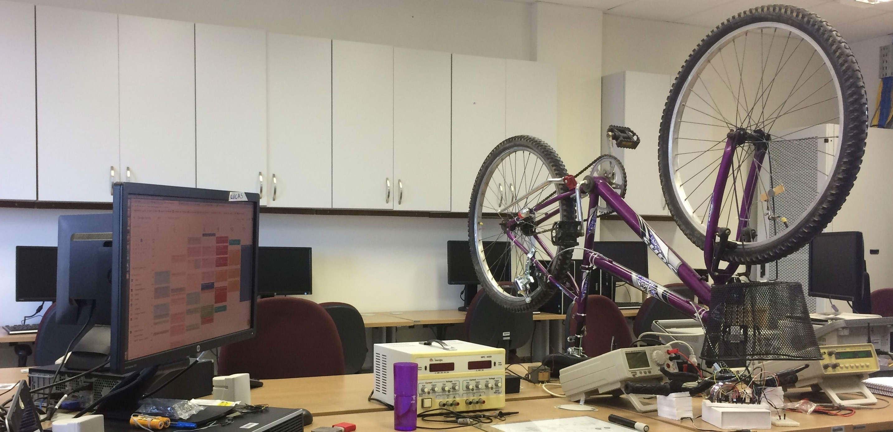

Le Vélo Intelligent
Celui-ci est un projet and développement dans le LASEM, Laboratoire de Systèmes Embarqués, à l'UFRN, où nous travaillons à un système pour les vélos qui leur permettre d'être connectés sur Internet. Notre idée est de développer un réseau de vélo-partage qui permettre à quelque citoyen de prendre un vélo dans une gare et le rendre dans une autre.
Cet appareil est projeté avec un capteur de la vitesse, géolocalization via GPS, protection antivol et détection d'accidents, y inclus le protocol à courte portée WiFi et le protocol à longue portée LoRa (lequel est encore en cours de mise en œuvre).
À travers d'une application mobile, l'utilisateur peut solliciter un vélo dans quelque station, et puis le serveur Web indiquera quel vélo peut être pris. Après le déverrouillage, le vélo est pris et commence à collecter des données comme la vitesse moyenne et position, ce qu'indique si l'utilisateur est dans la zone permise. Ces données peuvent être envoyés à l'administration du système à travers du protocol LoRa et peuvent avertir la securité au cas où il y avait de l'activité suspecte, en prévenant des possibles vols.
En arrivant à la gare de destination, l'utilisateur doit placer le vélo dans une place disponible et alors finir le trajet sur l'application. Le serveur Web commande que la gare verrouille le vélo arrivant. En suivant, celui-ci commence a envoyer des données collectés durant le trajet au serveur Web, ceux qui peut être analysés postérieurement.
Celle-ci est notre idée qui permettre à plus de personnes d'avoir une alternative bonne pour la santé et aussi pratique, au lieu des voitures et des bus, spécialement dans des villes grandes.